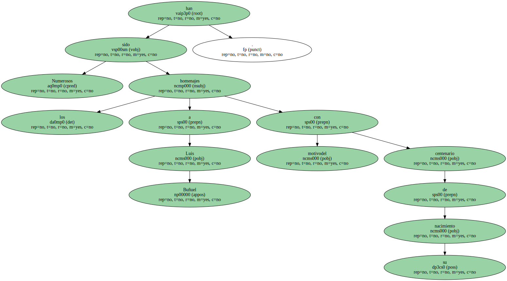
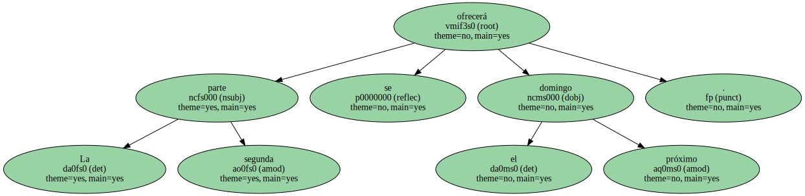
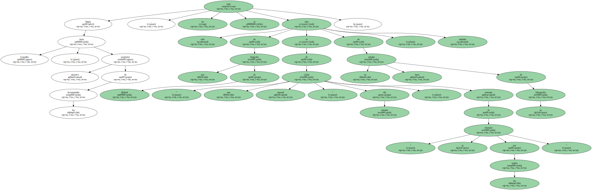
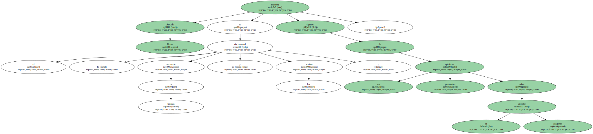
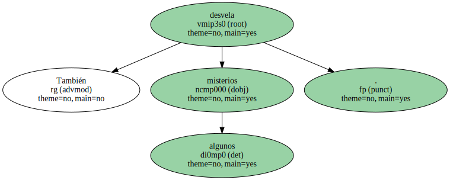

Numerosos han sido los homenajes a Luis Buñuel con motivodel centenario de su nacimiento.
La 2 retoma hoy ( 00.15 horas ) el tema con la emisión de un documental de dos capítulos de Antonio Drove , director de filmes como La verdad sobre el caso Savolta ( 1979 ).

La segunda parte se ofrecerá el próximo domingo.
Según Jesús González , productor ejecutivo de los documentales , no se trata sólo de una biografía de Buñuel ni de un mero estudio de su filmografía , sino también de " una visión especial " del cineasta , centrada en " su obsesión por los sueños ".
Antonio Drove muestra en el documental , titulado La memoria y los sueños , algunas de sus personales opiniones sobre el director aragonés.
También desvela algunos misterios.
